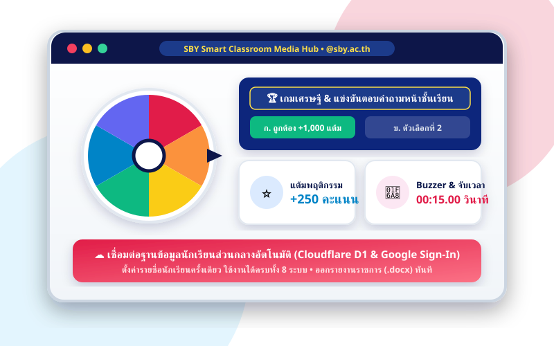

โรงเรียนส่วนบุญโญปถัมภ์ ลำพูน • พัฒนาระบบโดย ครูทวีป นวคุณานนท์
แพลตฟอร์มสื่อการสอนและเกมการศึกษาเชิงรุก (Active Learning) ทั้ง 9 ระบบ เชื่อมต่อฐานข้อมูลรายชื่อนักเรียนและข้อมูลโรงเรียนชุดเดียวกัน บันทึกข้อมูลขึ้นคลาวด์อัตโนมัติ และส่งออกรายงานราชการ (.docx) ได้ทันที
